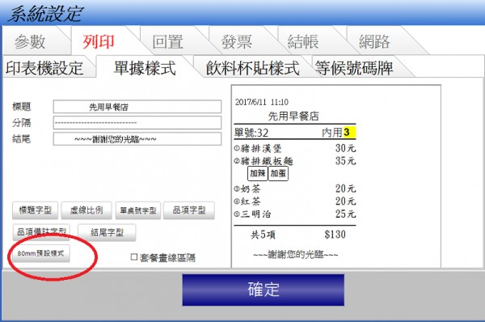

回問題列表 數量為2以上的顯示設定 Q1118 功能修改 宙斯鳴 Jun 10, 2017 你好，我已經寄單據照片給您了 如圖所示，不管數量多少，都會 反黑，項次並非像你所附的圖一 樣，會隨之反黑，還請解惑 1 個回答 回答 #1119 advpos Jun 11, 2017 1.您好 未收到您的Email 可在論壇上直接貼圖附圖的方法:http://ico.tw/QA/index.php?qa=4142.請將設定設回預設試試
回答 #1119 advpos Jun 11, 2017 1.您好 未收到您的Email 可在論壇上直接貼圖附圖的方法:http://ico.tw/QA/index.php?qa=4142.請將設定設回預設試試